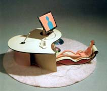

| New Tendencies in Serbian Ceramics
Article by Biljana Vukoti
The
contemporary ceramic scene in Serbia at the beginning of the 21st
century is distinguished by structured phenomena and specific artistic
individualities. The artistic climate in Belgrade and Novi Sad reflects
authentic international happenings: new artistic ideas, analytical
works, installations, multidisciplinary researches and experiments.
In his text ‘The Contemporary Artistic Scene in Serbia within
the International Context’2 J. Denegri, art historian and
art critic, states: “From the rift with social realism in
the early 1950s to the domination of ‘socialist modernism’
active between 1950 and 1990, when the state of Yugoslavia was dissolved,
Serbian art, visual and applied, was part of West European art,
while ceramic art was part of the global artistic scene. This was
presented in numerous exhibitions. Throughout the major part of
the 1990s Serbian art was “forced backwards to the state of
art produced in the conditions of a closed society. After the sanctions
had been lifted and the political changes had taken place in 2000,
the relationship between local and international art gradually became
normal.”
In the mid-1990s a generation of talented ceramic artists matured;
notwithstanding unfavourable political conditions and, without the
support of major state cultural institutions, they organised solo
exhibitions. A significant number of artists also took part in the
most important international exhibitions of artistic ceramic works.3
The exhibition Contemporary Serbian Ceramics at the Beginning
of the 21st Century is not thematically defined. The concept of
the show is to display the best works by artists of diverse poetic
expressions and interests. There are works by artists whose interests
are related to sculpture in ceramics, installations and multidisciplinary
researches or those interested in utilitarian vessel ceramics as
well as those for whom the pot is just the point of departure for
the creation of different sculptural forms. The works are executed
in different techniques: porcelain, stoneware, raku, terra sigillata,
maiolica and faience.
The
exhibition comprises works by the young and youngest generations
of Belgrade artists of various visual, stylistic, iconographic,
technical and technological preferences. The aim of the exhibition
is to put forward those artists to whom the universal criteria of
contemporary art could be applied. The choice of such tendencies
has been determined by the existing artistic production intensified
in the first years of this century through the activities of ceramic
art colonies and numerous exhibitions.
Since the political changes of October 5, 2000, international cooperation
has gradually been re-established and the Museum of Applied Art
in Belgrade has organised two shows of contemporary ceramics from
Japan4 and Italy5. A reciprocal exhibition of contemporary Serbian
ceramic art has been prepared and hopefully will be implemented
in the near future.
Although, as reported by J. Denegin, “due to a number of
unfavourable processes the international status of Serbian art at
the beginning of the 21st century appears to be unstable, almost
at the mercy of chance events”6.
The exhibition Balkan Contemporary Ceramics, prepared by national
experts, was one of the events organised on the occasion of the
50th jubilee of the foundation of the International Academy of Ceramics
in Athens in 2002.7 Biljana Vukotic was one of the selectors for
Serbia and Montenegro, and Serbian ceramic art was successfully
represented by the works of four young artists from Belgrade.8
The
most important exhibition of ceramic art in Yugoslavia and now in
Serbia was held in May 2003.8 Janet Mansfield, ceramic
artist (Australia), chair of the jury of the 11th Triennial of Contemporary
Ceramic Art, wrote the following in the official statement of the
jury: “The jury, which included Sava Ristovic, art historian
(Belgrade) and Petar Sadi, graphic artist (Subotica) considered
the works in three sections and awarded the Grand Prix and three
specific category prizes. The members of the jury were unanimous
in their appraisal of the high standard all works and believe that
many deserved to be awarded. However, the jury selected the works,
which represented the most direct expressions of originality, sensitivity,
skilful execution and use of material and congruence with the theme
of the selection.
“In the category ‘New Ideas and New Generations’,
curated by Olga Sram, the jury encountered works with a kinetic
quality, the use of mixed media and works that could be considered
as installations. The work Gift by Sladjana Danojevic was awarded
because in its concept it symbolised all of these qualities. The
work is convincing and original, its message is clear, the combination
of photography and ceramics makes an installation of plausible conceptual
value.
“In the category ‘Utilitarian Ceramics’ curated
by Gordana Biba Markovic, the jury discussed at length the relationship
between functional, non-functional and referential concepts with
regard to utilitarian objects. As the most inventive work submitted,
the jury awarded Cups by Dejan Stepanovic. His literal use of ceramic
material, his play with dramatic scale and the fact that it wittily
conditions the function of the object were the major elements in
the decision of the jury.
“In the category ‘Ceramic Sculpture’, curated
by Biljana Vukotic, the jury found many exceptional sculptural works
dealing with the themes of nostalgia, personal history or philosophical
concepts, also landscape and architecture. Srdjan Vukajlivic’s
work Trace was selected for the award because the jury decided that
it reflected contemporary events and, as a work in progress, spoke
of destruction and rebuilding, indicating freshness and change.
The jury recognised in the work an idea that had evolution and continuity,
but also left museum custodians freedom to position it in space.
“The jury awarded the Grand Prix to Jasmina Pejcic and her
work from 2003 for its originality and structured meaning. A glance
through a lens is simultaneously an interaction of the viewers with
the work, where they can see themselves inside a mysterious landscape
and be confronted with their own selves by the vision of the artist.
The jury believes that the 11th Triennial of Ceramic Art shows a
quality of works in all selections and congratulates all those who
have participated in the project.”9 All of the awarded works
are now in the contemporary ceramics collection of the Museum of
Applied Art in Belgrade.
At the 45th October Salon – Continental Breakfast –
Belgrade 2004,10 Srdjan Vukajlivic exhibited his conceptual work
entitled Chance in Art. The aim of the work was the acceptance of
chance as an element in the process of the creation of an artwork
and the shaping of cultural values. The work was conceived as an
interaction between the author and the selector, Anda Rothenberg
(Poland). The concept of the work comprises two texts, by the author
and the selector, and an object. Chance (for example, throwing of
the dice) determines if the work will be exhibited. “My idea
is to take a continental breakfast set, break it up into small pieces,
then glue them together in order to make a continuous strip. The
object is to be displayed in the gallery together with a photograph
of a table laid for a continental breakfast and, of course, our
two texts.”
Vukajlivic’s
work Form, glued porcelain, was executed in the same technique,
deconstruction. The factor of serendipity in the execution of an
artwork and the deconstruction of an object are the essential features
of his expression. Installation Form I, 2003, was also made in the
previously described method. The departure point is a porcelain
plate with a gold line border as the only element of decoration.
When the plate is broken into smaller pieces the artist created
an abstract composition focusing on the movement of the golden line,
which turns into an infinite line without a beginning or an end.
The structured composition Form, 2004 by Biljana Milenovic-Stojanovic
can be classified as a pot-like installation. The composition comprises
juxtaposed round and cylindrical elements, flat and rounded surfaces,
black and white. The artist achieves the dynamics of the composition
by emphasising the relationship between the static part and the
upper surface decorated with different porcelain sticks.
The installation by Marija Milin has changeable dimensions; the
elements were thrown by hand, made in the technique of faience in
white and coloured clay and glazed on the inside. She was gradually
developing a concept of different apertures in her work as well
as contrasts between the flat upper surfaces and rounded forms.
The composition permits different combinations of spatial installation
owing to the diagonally cut upper surface that produce a shifted
base, the centre of the pot. During the forming, the white and coloured
masses make up a spiral decoration which is repeated in different
variations in all parts of the composition.
Aleksandar Vac’s Abstract Panel, 2004, derives its form from
the rhythm produced by glazed and unglazed tiles. They could be
observed either individually or as being structured into a whole
and dominated by the contrast of metallic and unglazed surfaces.11
Vojislava Citakovic frequently makes narrative compositions easily
understood by the beholder who can “...accept or reject, laugh
or be revolted...” She transposes events and information from
an everyday environment into clay; combines the symbols of pop-culture
and the contemporary consumer society with her own creations and
imagination. Her composition Virtual Lover speaks of a new way of
expressing emotions: “Is it possible to show emotion on a
desktop and then in the heart? How many kilobytes has your love?
Do you have enough RAM memory for that?” Vojislava Citakovic
underlines the dependence of man on machines, sometimes even more
then on another human being. In her sculpture Mars and Venus, 2003,
she “converts different popular motifs into ceramics, thereby
expanding the borders of the medium. By the application of attractive,
recognisable quotations from contemporary pop culture, the artist
plays with traditional sculptural forms, the bust in this case”.12
The compositions of Citakovic are large, decorated with strong pigments
and porcelain slip.
In her Movimento, 2003, Tijana Dujovic-Liscevic extends the previously
begun static-dynamic interplay of terracotta and wire shaped in
the form of bicycle wheels that emerge from the basic ceramic matter,
desiring to represent an essential vision of movement. Nemanja Nikolic,
Ana Sijacic and Lucija Adamovic belong to the youngest generation
of ceramists. They are inspired by street graffiti (Sijacic’s
maiolica) or represent structured narrative, symbolic compositions
(Three Additional Figures, Nikolic’s maiolica and Leaving
Adamovic’s stoneware). All these works were made in 2004.
In the other group are artists who take the form of pot as a basic
inspiration in creating their ceramic sculptures. The works exhibited
at the 11th Triennial introduce the pot as theme and inspiration:
for example Lana Tikvesa’s Magician, handmade stoneware from
2004. The artist explains: “Formally, these are still teapots,
but they closely approach abstract sculptural forms inspired by
the organic world, sea fauna, birds, human heart.” She arrives
at the form through structures of large pieces of grogged clay left
after tearing or ripping, still bearing the traces of the work process,
fractures and cracks between the fractures, with or without the
help of a tool.
In
the pair of sculptures Static Movement, stoneware, 2004, Ivana Rackov
starts from the traditional form of pot which she transforms into
floral and animal shapes taken from nature. In the cycle Source,
stoneware, 2004, Ivana Batalo continues the development of forms
begun in her characteristic way of thematic and technical treatment
of pot.13 Although the artistic code of Larisa Ackov, Ljubica Jocic,
Jasmina Pejcic, Tijana Dordevic and Velimir Vukicevic is primarily
linked to installations and ceramic sculptures, this time they are
represented with works in the field of pottery. In the pots entitled
The Light of the Encounter and Embrace, 2003, glazed stoneware,
Ackov decorates the outer surfaces with her characteristic and recognisable
symbols of human figures and natural phenomena. The pot from the
cycle Searching for Beauty, 2002, by Jocic is made in stoneware
combined with hand-shaped clay tablets and parts made by pressing
the clay into the mould. The artist strives to achieve a balance
of a small base and ornate upper part of the pot through combinations
of pure form and dark unglazed facture.14 In the work Triad, terra
sigillata, 2002, Jasmina Pejcic uses minimal means in order to extract
the maximum from the material and to apply to the pot the technique
ordinarily used in the making of ceramic sculptures. The work was
first fired in the electric kiln and then exposed to the process
of reduction. By using the simple technique of firing – a
hole in the ground – the work is pit-fired. “It is a
process where nothing depends on me any longer... that kind of unpredictability
attracts me, fascinates me.”
Pejcic chose simple forms for her Triad since the trace of fire
is best presented on simple and condensed forms. The starting idea
of Dordevic’s Couple, 2004, is the diversity of butterfly
wings, their texture, patterns, colours, forms. The form of the
pot reminds us of a butterfly with half-closed wings. The technique
of paper-porcelain is conditioned by the texture of the wings made
from minute tiles. The objects are structured like mosaics, by arranging
small areas in paper-porcelain in the mould. The artist says: “Since
I used a coloured mass, the pattern can be seen both from the outside
and the inside... owing to paper porcelain these pots seem lighter
and thinner.” A Fine Pair of Jugs by Velimir Vukicevic, porcelain,
slip, glaze, 2002, is made by hand and composed of tablets that
have been fired several times. The geometric decoration is on the
upper surface, close to the opening of the jug, executed by hand
in lines of different width and colour. The white surface of the
body of the jug is made by the latex protective layer.15 The pots
by Igor Sabadoc, from 2004, are made in turned porcelain, glazed
on both sides. Although unique, they are made in the minimalist
manner of contemporary design.
We hope that the choice of artists, their works and the concept
of the exhibition follow the idea of Professor Ivan Tabakovi: “Artists
and poets have been frequently the avant-garde of discoveries. They
should know and observe the worlds revealed to them by scientific
development – the trajectory of the ball, the play of sea
waves, the beauty of structures, the myriad of forms, the movement
of shadow and light provide infinite possibilities for research.
One should search – search open new roads for creative forces.”16
The exhibition 'Contemporary Serbian Ceramics' is being held at
the Ceramic Art Gallery
from February 2 - 26, 2005
references
- Ivan Tabakovic (1898-1997), was a member of the Serbian Academy
of Sciences and Arts, painter and ceramist. His theoretical and
artistic achievements in the visual and applied art had a strong
influence on numerous generations of artists. He was a member
of the International Academy of Ceramics since 1952 and took part
at its exhibitions in Cannes (1954), in Ostende (1959), and won
the gold medal at the third IAC exhibition in Prague (1962). Since
1959 he took part in the important biennial exhibitions of ceramic
art organised by the International Museum of Ceramics in Faenza.
- J. Denegri, 45. oktobarski salon - kontinentalni dorucak (45th
October Salon – Continental Breakfast), Beograd, 2004, 63.
- Vukotic, Nove tendencije u savremenoj srpskoj umetnosti 1996-2002
(New Tendencieis in the Contemporary Serbian Art 1996-2002), Beograd
2002, CD of the exhibition; Ceramics Art and Perception International,
Australia 2003, issue 54, 72-76.
- Shiraishi Masami, Japanese Pottery: the Rising Generation from
Traditional Japanese Kilns, Japan Foundation, 1999.
- Massimo Bignardi, Terre Mediterranee – Aspetti della
nuova ceramica d’arte nel salernitano, Belgrado, Museo delle
arti applicate, 1-31, 03, 2002.
- J. Denegin, Op.cit.
- K. Takassis, Balkan Contemporary Ceramics, exhibition catalogue,
Athens, 2002, 49-57.
- B. Vukotic, XI trijenale savremene umetnicke keramike (11th
Triennial of Contemporary Ceramic Art), exhibition catalogue,
Beograd, 2003, 12; 11. Triennale der zeitgenossische keramische
Kunst in Belgrad, Keramik Magazin, Germany, 2003, 39.
- B. Vukotic, XI trijenale savremene umetnicke keramike (11th
Triennial of Contemporary Ceramic Art), exhibition catalogue,
Beograd, 2003, 3.
- The October Salon, founded in 1960 is a yearly exhibition of
visual arts and, since 1967, has also exhibited applied arts.
In 2004 it became an international co-curatorial and multidisciplinary
project dedicated to the latest ideas in the domain of contemporary
arts.
- Aleksandar Vac graduated from the Faculty of Applied Arts in
Belgrade in 2003. He has received a number of awards and recognitions,
including the Ivan Tabakovic Fund Award, the October Salon acknowledgement
for applied art at the 43rd Salon in Belgrade, 2002, the Plaque
of the Applied Arts Association at the 43rd Salon in 2002, an
Honorary Diploma of the International Triennial Exhibition Cup,
Belgrade, 2003.
- M. Stankovic, Otkrivanje razlicitog (Discovering the Different),
exhibition catalogue, Sopot, 2004, 4.
13. B. Vukotic, ‘One World Sculptures’ by Ivana Batalo,
Ceramics Art and Perception International, Australia 2004, 67-69.
- Published in the exhibition catalogues of the 6th International
Ceramic Competition, Mino, Japan, 2002, 125; the 4th Mashiko Ceramic
Competition, 2002, 75; B. Vukotic, XI trijenale savremene umetnicke
keramike (11th Triennial of Contemporary Ceramic Art), exhibition
catalogue, Beograd, 2003, 22.
- Velimir Vukicevic graduated from the Faculty of Applied Arts
in 1974, completed his postgraduate studies in 1976. Since 1994
he has been Associate Professor for the subject of artistic ceramics,
Ceramics Department, Faculty of Applied Arts. Member of the IAC
since 2002.
- Ivan Tabakovic. Op.cit.
Biljana Vukoti is Senior Custodian, Museum of Applied Art, Belgrade.
The exhibition ‘Tendencies in Contemporary Serbian Ceramics
at the Beginning of the 21st Century’ will be shown at the
Ceramic Art Gallery, February 2 – 26, 2005. 120 Glenmore Road,
Paddington, NSW 2021, Australia.
More Articles
|